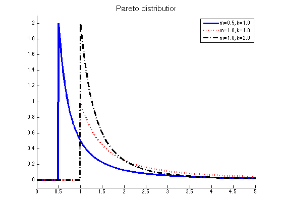

Plot the pareto distribution
% This file is from pmtk3.googlecode.com figure; hold on; ks = [1 1 2]; ms = [0.5 1 1]; [styles, colors] = plotColors(); xs = 0:0.01:5; nk = length(ks); legendStr = cell(1, nk); for i=1:nk model.K = ks(i); model.m = ms(i); p = exp(paretoLogprob(model, xs)); plot(xs, p, styles{i}, 'color', colors(i), 'linewidth', 3); legendStr{i} = sprintf('m=%2.1f, k=%2.1f', ms(i), ks(i)); end legend(legendStr) title('Pareto distribution', 'fontsize', 15) %set(gca, 'xlim', [1 5]); set(gca, 'ylim', [-0.1 2.1]) printPmtkFigure pareto-pdf; %{ %% Plot on a log log scale copyobj(gca, figure()); set(gca, 'xscale', 'log', 'yscale', 'log'); %figure; %axis(exp([0 1.5 -6 2])); %set(gca, 'XTick', 1:0.5:5); %set(gca, 'YTick', [0 0.5 1 2 3]); legend(legendStr) title('Pareto(m=1, k) on log scale', 'fontsize', 15) printPmtkFigure pareto-log-pdf; %}